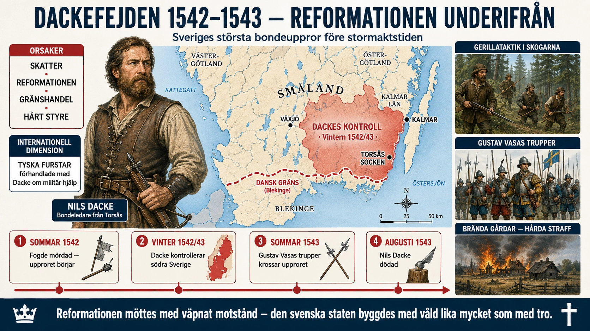

När bönderna tog upp vapen mot kungen
I §2D läste du att Sveriges reformation drevs fram av Gustav Vasa och att den mötte motstånd — särskilt genom Dackefejden 1542–1543. Här ska vi titta närmare på detta uppror. Det är en av de mest dramatiska episoderna i svensk historia — och en påminnelse om att reformationen inte var ett populärt folkligt projekt, utan ett kungligt projekt som ofta trycktes ner på människor mot deras vilja.
Dackefejden är också fascinerande av en annan anledning: Nils Dacke förhandlade som en jämbördig makthavare med utländska furstar. Under en kort period kontrollerade han faktiskt större delen av södra Sverige och behandlades av tyska protestantiska furstar som en potentiell allierad. Han var, kort sagt, mer än en vanlig bondeledare — han var något som liknade en alternativ regent.
Vem var Nils Dacke?
Vi vet ganska lite om Nils Dacke som person. Han var född omkring 1490 i en bondgård i Torsås socken i sydöstra Småland — nära gränsen mot Blekinge, som då tillhörde Danmark. Han var bonde av yrke, men också något av en gränshandlare. Han hade tidigare varit inblandad i en dödsdräpning och blivit dömd — men han hade rymt ur fångenskap och levde som fredlös.
Ganska tidigt visade han organisatoriska talanger. Han byggde nätverk över häradsgränser, samlade följe och utvecklade metoder för väpnat motstånd. När missnöjet mot Gustav Vasas politik växte i Småland under 1530-talet stod Dacke redo att leda det.
Varför reste sig bönderna?
Böndernas missnöje hade flera orsaker som förstärkte varandra. Ingen enskild faktor var avgörande — det var kombinationen som gjorde upproret möjligt.
Skatterna. Gustav Vasa byggde upp den moderna svenska staten, och det kostade pengar. Under 1530-talet ökade skattetrycket dramatiskt. Nya skatter infördes, gamla skatter höjdes, och kungens fogdar drev in dem med hård hand. Bönderna såg deras traditionella friheter försvinna.
Reformationen och kyrkans egendom. När Gustav Vasa år 1527 tog kontroll över kyrkans egendom och började dra in kyrksilvret och rasera helgonbilderna reagerade landsbygdens folk starkt. För dem var kyrkan inte en abstrakt teologisk institution — den var källan till helgonskydd mot sjukdomar och missväxt, den var vandringshemmet vid pilgrimsfärder, den var källan till välgörenhet vid nöd. Att bränna helgonbilder var inte reform — det var vandalism mot livsviktiga andliga skydd.
Gränshandeln. Smålänningarna hade traditionellt handlat fritt med Danmark, särskilt genom Blekinge och Skåne. Gustav Vasa försökte kontrollera denna gränshandel för att öka statens tullinkomster. För bönderna innebar detta att deras kontanta inkomster försvårades — samtidigt som skatterna som skulle betalas i kontanter ökade.
Kungens hårda styre. Gustav Vasa var känd för sin brutalitet mot motstånd. Redan tidigare hade han slagit ner uppror i Dalarna och Västergötland med stor hårdhet. Fogdarna som representerade honom var fruktade. En känsla växte fram att den nya centraliserade staten var en främmande makt som förtryckte folkets traditionella friheter.
Upprorets förlopp
Sommaren 1542 nådde missnöjet en brytpunkt. Nils Dacke och några följeslagare mördade en av Gustav Vasas fogdar i Småland. Det var startpunkten. Nu spreds upproret snabbt.
Under hösten 1542 lyckades Dacke bygga upp en betydande styrka — flera tusen väpnade bönder. De var beväpnade med sin egen jaktutrustning (armborst, bågar), enkla vapen (yxor, spjut) och de vapen de kunde ta från fogdarnas mordkommandon. De organiserade sig i smärre band som täckte olika delar av Småland och kunde koncentreras när det behövdes.
Dacke visade sig vara en skicklig militär taktiker. Han undvek öppna slag mot Gustav Vasas trupper (som han inte kunde vinna på grund av sämre utrustning) och förde istället ett gerillakrig i de djupa skogarna. Han utnyttjade terrängen — Smålands täta skogar och sumpiga områden gjorde det svårt för Gustav Vasas soldater att röra sig. Han organiserade också bakhåll och överraskningsattacker.
Vid årsskiftet 1542/1543 kontrollerade Dacke i praktiken hela södra och östra Småland. Han hade upprättat egen administration i de befriade områdena. Gustav Vasas fogdar hade flytt eller dödats. Vissa kloster återöppnade — Dackes anhängare ville tillbaka till den katolska ordningen.
Internationell diplomati
Här blir historien riktigt intressant. Nils Dacke behandlades av tyska protestantiska furstar som en potentiell allierad mot Gustav Vasa. Han fick brev från hertig Albrekt av Mecklenburg — en av Gustav Vasas tidigare motståndare — och andra tyska furstar. Man diskuterade möjligheten av utländsk militär hjälp.
Kejsar Karl V:s ombud betraktade också Dacke som en möjlig kanal för att återinföra katolicismen i Sverige. Man diskuterade om Nils Dacke kanske skulle kunna få hertig Fredrik av Bayern som konung av Sverige — vilket i så fall skulle ha inneburit återgång till katolicismen.
Detta är historiskt anmärkningsvärt. En bondeledare från Torsås socken förhandlade som en jämbördig makthavare med furstar och kejserliga sändebud. För en kort period behandlades han inte som en rebell utan som en statsman.
Gustav Vasas motoffensiv
Gustav Vasa insåg allvaret. Vintern 1542/1543 mobiliserade han en professionell militär styrka — inklusive tyska legosoldater — för att slå ner upproret. Han insåg också att han behövde vinna över dem som ännu vacklade genom både förhandlingar och propaganda.
Våren 1543 inleddes den systematiska nedslagningen. Gustav Vasas trupper — som var bättre utrustade och tränade — bröt igenom bondearméerna. Dacke tvingades i defensiv. Hans allierade började falla bort. Utlovad utländsk hjälp kom aldrig.
Sommaren 1543 var upproret krossat. Nils Dacke sökte skydd i Blekinge, men förråddes och dödades i augusti samma år. Hans huvud sattes på en stör i Kalmar som varning.
Straffen för dem som varit inblandade i upproret var hårda. Många byar brändes. Sockenprästen och sockenåldermannen i socknar som stött Dacke avrättades. En femtedel av gårdarna i vissa socknar konfiskerades. Böter som skulle betalas kollektivt utdömdes på hela härader.
Historisk betydelse
Dackefejden är historisk viktig av flera skäl.
Den visar reformationen underifrån. De flesta reformationshistorier berättas från de politiska och teologiska ledarnas perspektiv — Luther, Calvin, Gustav Vasa. Dackefejden ger oss en glimt av hur reformationen upplevdes av vanliga människor. För bönderna var det inte en teologisk debatt utan ett angrepp på deras livsformer. Helgonbilderna som brändes hade varit deras hjälpare vid barnafödsel och sjukdom. Klostren som stängdes hade varit deras sjukhus och vandringshem. När allt detta plötsligt togs bort — samtidigt som skatterna höjdes — reste de sig i förtvivlan.
Den visar statsbyggnadens våldsamma karaktär. Vi tenderar att tänka på Sveriges reformation som en relativt fredlig process — särskilt jämfört med de blodiga religionskrigen på kontinenten. Men Dackefejden visar att den svenska statsformningen också byggdes med våld. Utan den brutala nedslagningen av bondemotståndet hade den centraliserade svenska staten inte varit möjlig.
Den påminner om det möjligas gräns. Under en kort period 1542–1543 tycktes en alternativ historia möjlig. En återgång till katolicismen. En decentraliserad Sverige. Kanske till och med en tysk katolsk kung. Att detta inte hände var inte förutbestämt — det berodde på militär styrka, timing och politiska val. Dackefejden är därmed en påminnelse om att historia inte är förutbestämd. Det finns alltid vägar som inte togs.
Nils Dacke i svenskt minne
Nils Dacke är en märklig figur i svenskt historieminne. Under lång tid framställdes han som en enkel rebell och våldsverkare — en fara mot den ordning som Gustav Vasa byggde upp. Först under 1800- och 1900-talen började han rehabiliteras. Idag ses han av många som en tidig representant för folkligt motstånd mot statlig maktkoncentration.
I Småland finns hans minne fortfarande levande. Museum, monument och årliga minnesdagar hålls till hans ära. Han är en av dessa historiska figurer som säger något om hur olika epoker konstruerar sina egna hjältar och skurkar — och om att den svenska nationalstaten byggdes inte bara på Gustav Vasas segrar, utan också på dem som gjorde motstånd och förlorade.
## Koppling till avsnittet
Denna djupdykning kompletterar §2D Sveriges reformation genom att visa reformationen från landsbygdens perspektiv. Där huvudtexten fokuserar på Gustav Vasas statsbyggnad, Västerås 1527 och Uppsala 1593, visar djupdykningen den mänskliga kostnaden och det motstånd som statsbyggnaden krossade.